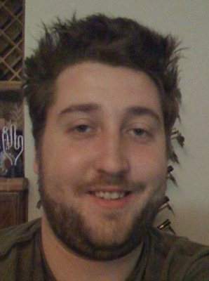

I was born in Douglasville, GA and grew up in Live Five Points in downtown Atlanta, GA. I attended Mary Lynn Elementary School for grades K-5. I played soccer from age 5 until age 11 and played in the premier league.
I then attended Taylor Road Middle School in Alpharetta, GA from grades 6-8. I started martial arts at the age of 12, studying both Tae Kwon Do and Karate. After school I loved to play basketball and sega with my friends.
I attended 3 different schools in my high school career. Nease High School in Ponte Vedra, FL, Palisades High School in Pacific Palisades, CA, and finished in Venice High School, CA. I continued studying martials arts throughout high school and college.
During my high school career I took the follow AP classes:
My current goal is to finish my Computer Information Technology A.S. with along with Database Specialist Certificate from Florida State College at Jacksonville. I then plan to work for 1 year as entry level programmer or business analyst.
I then plan on transfering to University of North Florida and obtain a B.S. in Computer Science or Information Science. I plan on specializing in databases and data science. During my bachelors I plan to study full time and not work.
Finally I planned to obtain a Masters degree in Data Science from accelerated program at GalavinzeU program in Silicon Valley. Once I have my masters during I would like to work for startups as a Data Scientist and also an adjunct professor teaching basic programming and computer science at the college level.
I spend lots of time online either reading, watching tv shows, and working. I would say the internet is my favorite place ever. I educate myself, entertain myself, and even earn money. It is probably why I am so passionate about computer science.
Here is a list in ranked order of my favorite places to waste time online:
©Chris Montone. All images must be used with permission. E-mail Chris Montone